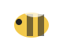

Help the garden grow!
Complete each activity to bring the colour back.
0 of 3 garden tasks complete
✓ Done


✓ Done
✓ Done
Complete each activity to bring the colour back.
0 of 3 garden tasks complete

✓ DoneWell done — you completed all three tasks!